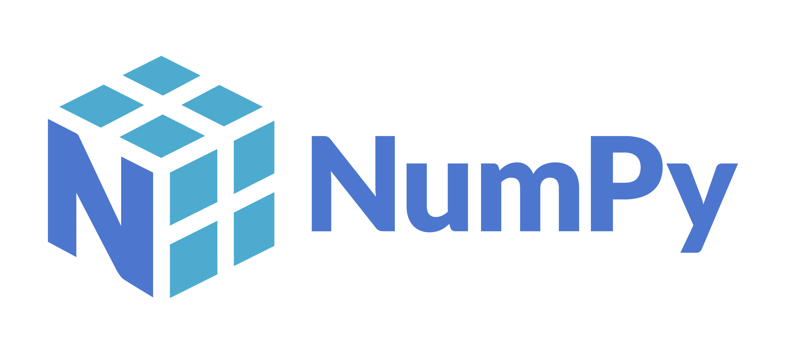
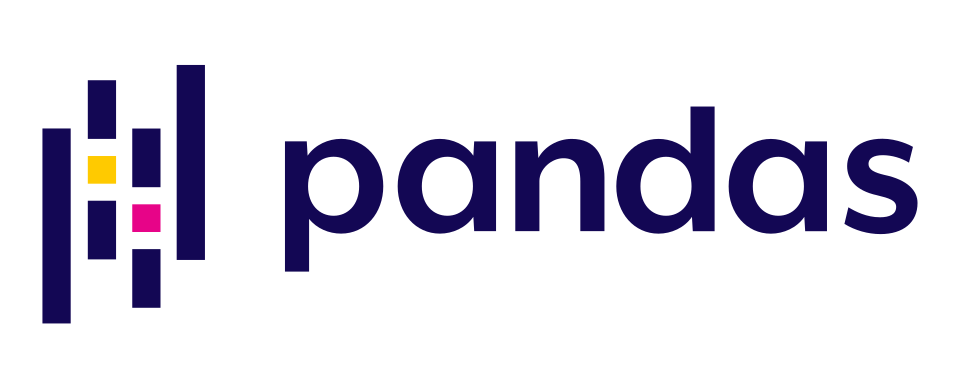
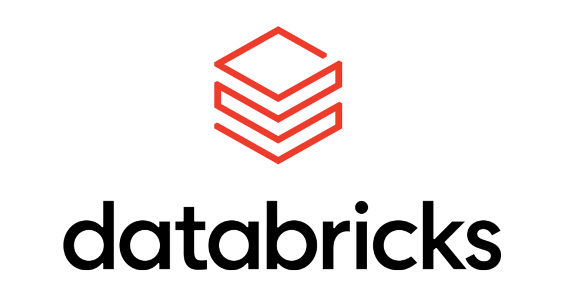

I am currently pursuing a Master's degree in Applied Data Science at Carnegie Mellon University, where I'm building deeper experience in machine learning, time series modeling, and experimental design through coursework and projects. Before that, I earned my bachelor's degree from the University of Michigan with double majors in Mathematics and Statistics.
My interests lie in building data-driven solutions that transform complex datasets into actionable insights and scalable decision systems. I enjoy applying analytics, statistics, and machine learning to real-world problems.
Outside of work, I enjoy watching anime, photography, and exploring new things that spark my curiosity.








I'm always happy to connect and discuss data science, machine learning, research opportunities, or potential collaborations. Feel free to reach out through any of the channels below.
qianruiw@andrew.cmu.edu
github.com/qianruixiwang
linkedin.com/in/qianruixi-wang